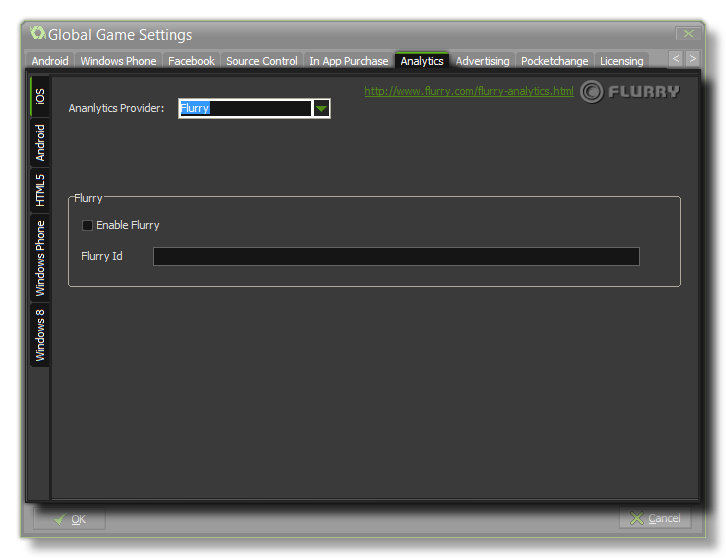

The Analytics Tab
This section deals with the Analytics tab of the Global Games Settings Window.

This tab permits you to add analytics to your game, permitting you to use certain third-party products to track your game and it's sales or plays. There are four sub-tabs for this, one for iOS, one Android one for HTML5
and a final one for Windows Phone.
For all available platforms you can specify whether to use Flurry Analytics or Google Analytics
to track your game, unless you are targeting the Windows 8 (Native or JS) module, in which case you can only use MarkedUp Analytics . Due to the nature
of these functions, you can only have one active at a time, so make sure that you check the correct one! Once you have flagged the Enable Flurry, Enable Google Analytics or
Enable MarkedUp check-box for your analytics provider, you should also add the unique ID that you have been assigned into the appropriate area.
For more information on analytics, please see the YoYo Knowledge Base.
NOTE: This functionality is limited to the Professional Version of GameMaker:Studio and will depend on the target modules that you
have installed.